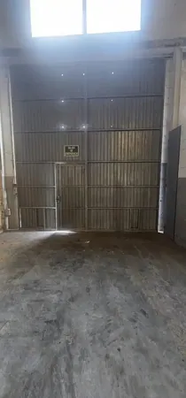
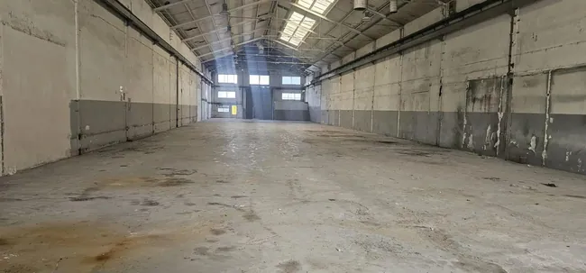

Plano · tocar un número de la lista lo marca acá
Letras: condiciones go/no-go · o: obra necesaria · números: lo que hay que medir o confirmar · c: lo que el chequeo de circulación marca hoy · trazos: el área o la franja de la cota · la línea azul: el largo libre a lo largo de la pista · ejes x/z: el origen de las cotas.
Condiciones go/no-go · si alguna sale mal, la nave se cae o hay que rehacer el layout
- Se decide en la visitaDecide: ≥ 7 m libres bajo jácenas, cerchas, luminarias e instalaciones en la vertical de la plataforma: plataforma a 4,2 m + 2,4 m del rider + 0,4 m de instalaciones (PROGRAMA §1). Si da menos, se baja la plataforma (a lo medido − 2,8 m), nunca el run-out.Altura libre medida con láser sobre la plataforma (m):
5 notas del layout
fuente de la cota: foto 7: los tirantes de cinco cerchas (z 4,5-22,3) quedan a 1,42 alturas del portón B sobre el suelo (ajuste en 1/distancia, coherente con la fuga de 444 px) ⇒ eje a ≈7,25 m con el portón de 5,1 m (≈7,1 m si mide 5,0); el anuncio dice 7 m libres: la plataforma se sigue dimensionando con esos 7 m
riesgo: Altura libre medida en fotos (≈7,2 m bajo tirantes en la foto 7; el anuncio dice 7 m): comprobarla en la vertical de la plataforma, con campanas, conductos e instalaciones colgadas; la plataforma ya está en el límite.
riesgo: Ranura de 0,2 m entre la meseta de la escalera y la plataforma (z 48,5-49,7, la franja de la red): en obra va una chapa de paso entre las dos o la meseta se apoya en el andamio de la plataforma. El descanso intermedio (+2,1 m) no lleva barandilla del lado de la pista porque el visor lo trata como lado de la plataforma; ahí lo protege el faldón de la rampa, que a esa altura ya está por encima (2,5-3,2 m), pero en obra hace falta barandilla.
riesgo: transitabilidad (rp-a, 24/11), propuesta: el postigo de la hoja izquierda del portón A (hueco 11, la salida de emergencia de la foto 5) mide 0,88 × 2,00 m: cumple DB-SUA 2 §1.1.1 (2,00) pero no los 2,10 m que pide el proyecto bajo los dinteles. Obra necesaria: un postigo de 2,10 m en esa hoja. No se cambia en el layout porque la nave de hoy (fitout: false) tiene que mostrar el de 2,00, y el esquema no guarda la altura de hoy de un hueco que la propuesta agranda: queda el error door-head de walk. Decisión del usuario (o del proyecto: aceptar los 2,00 del CTE en las puertas existentes).
supuesto: Cámaras de las fotos estimadas a ±0,3 m y ±0,1 m de altura (sin EXIF); las fotos 3, 4 y 6 son de gran angular (focal ≈ 700-750 px: el portón del testero lejano mide 60-64 px) y no se usaron para medir.
- Se decide en la visitaDecide: ≥ 34,5 m en línea recta a lo largo de la pista (plataforma 2 m, rampa, llano y el final más largo, run-out ≥ 8 m), de lo existente (recinto bajo existente) detrás de la plataforma a un pilar después del final. Si da menos, se acorta la rampa o el llano y se baja la plataforma, nunca el run-out.Distancia de lo existente (recinto bajo existente) a un pilar, a lo largo de la pista (m):
6 notas del layout
riesgo: Recinto bajo del testero A con fondo estimado (2,3-3,0 m): si es más hondo, hay que adelantar la plataforma y quitarle ese fondo al pad o al lounge.
riesgo: transitabilidad (rp-a, 24/11): evacuación de la plataforma. Desde su punta oeste (0,7; 50,2) se baja por la única escalera (x 13,15) y walk mide 38,0 m hasta un punto con dos recorridos alternativos (DB-SI 3 tabla 3.1: 25). walk solo mira las dos salidas más cercanas, y las dos lo son del testero A (la puerta amarilla 8 y el postigo 11, a 3,6 m una del otro), así que los recorridos recién se separan al llegar a ellas; al pie de la escalera (≈23 m) ya salen dos recorridos opuestos, a las salidas del testero A y a las de la calle, que es lo que DB-SI 3 llama alternativos. El arreglo de verdad sería una segunda escalera en la otra punta de la plataforma, y no hay sitio: la pista ocupa todo el ancho (0,45 m a la medianera) y el recinto bajo cierra la esquina de atrás. Queda en la lista: es del comprobador (walk-rules), o decisión del usuario si se quiere la segunda escalera (una línea menos).
supuesto: Bajada del testero A hacia la calle: la plataforma queda a 0,1 m del recinto bajo existente; el quarter de L1-L2 termina delante de la barra del lounge (x 0,25-4,65) y el run-out de L3-L4 delante del paso del final (z 14,55-15,75), con su salida de 1,2 m en x 11,75-12,95, junto a la boca del retorno; la recepción queda junto a la puerta de calle.
supuesto: 4 líneas de 3,125 m (12,5 m, x 0,45-12,95), con la franja de 0,2 m de murete, red y riego libre a cada lado; retorno de 2,4 m (x 13,15-15,55) y, en su último tramo, escalera recta de 1,2 m (dos tramos de 12 peldaños, descanso y meseta de llegada: 9,12 m) con un paso libre de 1,2 m al lado hasta la franja trasera, por donde se evacua la plataforma hacia las salidas del testero A.
supuesto: Recinto bajo del testero A de 5,2 × 3,0 × 2,8 m (fondo estimado en la foto 2; se toma el valor alto). Se conserva como existente; si no son los aseos del portal, sirve de almacén de módulos junto al portón A.
supuesto: transitabilidad (rp-a, 24/11): aseo adaptado de 2,2 × 2,7 m (z 8,4-11,1): con 2,2 × 2,2 el inodoro, el lavabo y las barras dejaban un giro de Ø 1,37 m (walk) y con 2,7 de fondo entra el de Ø 1,50 (DB-SUA anejo A). La oficina se corre a z 11,1-14,55 y queda en 7,6 m², 0,4 por debajo de los 8 de PROGRAMA. Escalera de la plataforma de 1,30 m (x 13,15-14,45): con 1,20 pegada a la red walk daba 1,18 útiles, con 1,30 da 1,28; el paso a su lado hasta las salidas del testero A sigue en ≥ 1,08 m.
- Se decide en la visitaDecide: Dos salidas o más a la calle o a un espacio exterior seguro, con recorridos de evacuación ≤ 50 m (CTE DB-SI 3 §3, tabla 3.1), y sus puertas con ≥ 0,80 m de paso y 2,10 m bajo el dintel. Cada salida nueva solo vale si el muro da a la calle o a un patio con salida y la propiedad deja abrirla (las obras, en «Obra necesaria»).
- puerta peatonal de 0,9 m en la arista 0 (hueco 2, x 3,5 · z 0)
- puerta peatonal de 1 m en la arista 2 (hueco 8, x 12,08 · z 53,6)
- salida de emergencia de 0,88 m en la arista 2 (hueco 11, x 8,51 · z 53,6) · obra o1 · no cumple: puerta door:11: 2,00 m de altura libre en el umbral (≥ 2,10 m)
Salidas confirmadas (cuáles, a dónde dan, ancho de paso):10 notas del layout
riesgo: El portal marca «sin salida de humos». El cambio a pública concurrencia pide control de humos, PCI completa (BIE, extintores, alumbrado de emergencia) y salidas señalizadas nuevas.
riesgo: Salida del run-out: la de 1,2 m (x 11,75-12,95) da al paso del final (z 14,55-15,75), que también usa quien va a las taquillas, a la oficina o al gym: en obra, red o barandilla de 1,1 m sobre el murete de 0,5 m del final del run-out para que quien frene tarde no invada el paso.
riesgo: transitabilidad (rp-a, 24/11), propuesta: el postigo de la hoja izquierda del portón A (hueco 11, la salida de emergencia de la foto 5) mide 0,88 × 2,00 m: cumple DB-SUA 2 §1.1.1 (2,00) pero no los 2,10 m que pide el proyecto bajo los dinteles. Obra necesaria: un postigo de 2,10 m en esa hoja. No se cambia en el layout porque la nave de hoy (fitout: false) tiene que mostrar el de 2,00, y el esquema no guarda la altura de hoy de un hueco que la propuesta agranda: queda el error door-head de walk. Decisión del usuario (o del proyecto: aceptar los 2,00 del CTE en las puertas existentes).
riesgo: transitabilidad (rp-a, 24/11): evacuación de la plataforma. Desde su punta oeste (0,7; 50,2) se baja por la única escalera (x 13,15) y walk mide 38,0 m hasta un punto con dos recorridos alternativos (DB-SI 3 tabla 3.1: 25). walk solo mira las dos salidas más cercanas, y las dos lo son del testero A (la puerta amarilla 8 y el postigo 11, a 3,6 m una del otro), así que los recorridos recién se separan al llegar a ellas; al pie de la escalera (≈23 m) ya salen dos recorridos opuestos, a las salidas del testero A y a las de la calle, que es lo que DB-SI 3 llama alternativos. El arreglo de verdad sería una segunda escalera en la otra punta de la plataforma, y no hay sitio: la pista ocupa todo el ancho (0,45 m a la medianera) y el recinto bajo cierra la esquina de atrás. Queda en la lista: es del comprobador (walk-rules), o decisión del usuario si se quiere la segunda escalera (una línea menos).
supuesto: Bajada del testero A hacia la calle: la plataforma queda a 0,1 m del recinto bajo existente; el quarter de L1-L2 termina delante de la barra del lounge (x 0,25-4,65) y el run-out de L3-L4 delante del paso del final (z 14,55-15,75), con su salida de 1,2 m en x 11,75-12,95, junto a la boca del retorno; la recepción queda junto a la puerta de calle.
supuesto: 4 líneas de 3,125 m (12,5 m, x 0,45-12,95), con la franja de 0,2 m de murete, red y riego libre a cada lado; retorno de 2,4 m (x 13,15-15,55) y, en su último tramo, escalera recta de 1,2 m (dos tramos de 12 peldaños, descanso y meseta de llegada: 9,12 m) con un paso libre de 1,2 m al lado hasta la franja trasera, por donde se evacua la plataforma hacia las salidas del testero A.
supuesto: Run-out de 8 m (mínimo) en L3-L4 y quarter de 1,2 m en L1-L2, con llano de 14 m. Con la salida a 4,2 m, la energía al pie de la rampa es ≈17 % menor que con la de referencia a 5 m, así que 14 + 8 m de frenada dan un margen comparable al de 14 + 10 m. Las líneas suaves (cajón y ola baja en L4, rail en L3) acaban en el run-out, y las de tubo y kicker (L2 y L1), en el quarter.
supuesto: El portón B queda libre detrás del vestíbulo (entrada de material y salida); el pad empieza a 2,2 m de la fachada.
supuesto: Recepción a nivel del suelo junto a la puerta de calle (recorrido accesible sin escalones hasta recepción, alquiler, aseo adaptado, café y lounge); la supervisión de la pista se hace desde el lounge, al final del run-out, y desde la plataforma (monitor de salida).
supuesto: transitabilidad (rp-a, 24/11): aseo adaptado de 2,2 × 2,7 m (z 8,4-11,1): con 2,2 × 2,2 el inodoro, el lavabo y las barras dejaban un giro de Ø 1,37 m (walk) y con 2,7 de fondo entra el de Ø 1,50 (DB-SUA anejo A). La oficina se corre a z 11,1-14,55 y queda en 7,6 m², 0,4 por debajo de los 8 de PROGRAMA. Escalera de la plataforma de 1,30 m (x 13,15-14,45): con 1,20 pegada a la red walk daba 1,18 útiles, con 1,30 da 1,28; el paso a su lado hasta las salidas del testero A sigue en ≥ 1,08 m.
- Con margenDecide: Huella ≥ 0,28 m, contrahuella de 0,13 a 0,185 m y 0,54 ≤ 2C + H ≤ 0,70 (CTE DB-SUA 1 §4.2.1); ancho ≥ 1,20 m (PROGRAMA; el CTE pide 1,00-1,10); tramos de ≤ 2,25 m sin descanso. Una escalera existente que no cumple no sirve para el público (gym o altillo): hay que rehacerla o poner otra.
- de la plataforma (escalera): huella 0,28 m, contrahuella 0,17 m, ancho 1,28 m, tramo de 2,1 m sin descanso, sube 4,2 m
Huella × contrahuella × ancho de la escalera existente (m):6 notas del layout
riesgo: Líneas de 3,125 m (la referencia es 3,3 m y el mínimo 3,0 m): se le quitaron 7,5 cm a cada una para despejar la franja de murete y red a los dos lados y dejar 1,2 m de paso junto a la escalera. Si el ancho interior medido en la visita es ≥ 16,1 m, se puede volver a 3,2 m.
riesgo: Ranura de 0,2 m entre la meseta de la escalera y la plataforma (z 48,5-49,7, la franja de la red): en obra va una chapa de paso entre las dos o la meseta se apoya en el andamio de la plataforma. El descanso intermedio (+2,1 m) no lleva barandilla del lado de la pista porque el visor lo trata como lado de la plataforma; ahí lo protege el faldón de la rampa, que a esa altura ya está por encima (2,5-3,2 m), pero en obra hace falta barandilla.
riesgo: transitabilidad (rp-a, 24/11): evacuación de la plataforma. Desde su punta oeste (0,7; 50,2) se baja por la única escalera (x 13,15) y walk mide 38,0 m hasta un punto con dos recorridos alternativos (DB-SI 3 tabla 3.1: 25). walk solo mira las dos salidas más cercanas, y las dos lo son del testero A (la puerta amarilla 8 y el postigo 11, a 3,6 m una del otro), así que los recorridos recién se separan al llegar a ellas; al pie de la escalera (≈23 m) ya salen dos recorridos opuestos, a las salidas del testero A y a las de la calle, que es lo que DB-SI 3 llama alternativos. El arreglo de verdad sería una segunda escalera en la otra punta de la plataforma, y no hay sitio: la pista ocupa todo el ancho (0,45 m a la medianera) y el recinto bajo cierra la esquina de atrás. Queda en la lista: es del comprobador (walk-rules), o decisión del usuario si se quiere la segunda escalera (una línea menos).
supuesto: 4 líneas de 3,125 m (12,5 m, x 0,45-12,95), con la franja de 0,2 m de murete, red y riego libre a cada lado; retorno de 2,4 m (x 13,15-15,55) y, en su último tramo, escalera recta de 1,2 m (dos tramos de 12 peldaños, descanso y meseta de llegada: 9,12 m) con un paso libre de 1,2 m al lado hasta la franja trasera, por donde se evacua la plataforma hacia las salidas del testero A.
supuesto: plantilla Stoke Mountain adaptada: plataforma 4.2 m × 2.0 m; drop-in de 1.33 m en 3.7 m; 3 terraza(s) de 4.1 m que caen 5° unidas por drops de 0.58 m en 2.6 m; carril de transición en la línea 1 (bajada de 15.5 m, kicker Accelerator y 0 rollers de 0,3 m); 9 módulos a escala real por terraza (T1 cajones cortos, T2 cajón largo / rail / roller, down rail en el último drop), solo donde se llega con velocidad (µ 0,09); misma huella, mismos finales (run-out ≥ 8 m / quarter) y escalera; los módulos anteriores quedan en slope.legacyModules.
supuesto: transitabilidad (rp-a, 24/11): aseo adaptado de 2,2 × 2,7 m (z 8,4-11,1): con 2,2 × 2,2 el inodoro, el lavabo y las barras dejaban un giro de Ø 1,37 m (walk) y con 2,7 de fondo entra el de Ø 1,50 (DB-SUA anejo A). La oficina se corre a z 11,1-14,55 y queda en 7,6 m², 0,4 por debajo de los 8 de PROGRAMA. Escalera de la plataforma de 1,30 m (x 13,15-14,45): con 1,20 pegada a la red walk daba 1,18 útiles, con 1,30 da 1,28; el paso a su lado hasta las salidas del testero A sigue en ≥ 1,08 m.
- Se decide en la visitaDecide: Ningún pilar dentro de la pista; los de la franja de 0,2 m del murete y la red, forrados (el murete se corta en cada uno); el pasillo de retorno, ≥ 1,80 m libres con los pilares.Posición y sección de los pilares junto a la pista (m):
- Se decide en la visitaDecide: El ancho entre medianeras (cara de los pilares) que da para las líneas de la pista, su franja y el retorno de ≥ 1,80 m.Ancho interior entre caras de pilares (m):
2 notas del layout
riesgo: El ancho es la gran incógnita: el anuncio dice 20 m y las fotos, 15-16,4 m. Hay que medirlo en la visita. Si fueran 20 m, quedaría una franja lateral de ≈4 m para camas elásticas y gym.
riesgo: Líneas de 3,125 m (la referencia es 3,3 m y el mínimo 3,0 m): se le quitaron 7,5 cm a cada una para despejar la franja de murete y red a los dos lados y dejar 1,2 m de paso junto a la escalera. Si el ancho interior medido en la visita es ≥ 16,1 m, se puede volver a 3,2 m.
- Se decide en la visitaDecide: Lo que no se ve en las fotos y puede cambiar la obra: puentes grúa, forjados que tienen que aguantar el gym, muros que habría que tirar, cubiertas de fibrocemento.Qué se vio (y qué papel hay que pedir):
1 nota del layout
riesgo: Cubierta de fibrocemento de 1995: probable amianto. Hay que retirarla o encapsularla antes de abrir al público (coste y plazo).
Obra necesaria · lo que la nave no tiene hoy y la propuesta necesita: decisiones del usuario, a ver en la visita si se puede
- obra en un hueco existenteObra: Obra necesaria: un postigo de 2,10 m en esa hoja.En la visita: Medir el hueco de hoy (paso libre, altura bajo el dintel y el escalón del umbral) y ver si se puede hacer la obra: es una decisión del usuario.
- Hoy: c1: puerta door:11: 2,00 m de altura libre en el umbral (≥ 2,10 m)
De dónde sale
riesgo 15: transitabilidad (rp-a, 24/11), propuesta: el postigo de la hoja izquierda del portón A (hueco 11, la salida de emergencia de la foto 5) mide 0,88 × 2,00 m: cumple DB-SUA 2 §1.1.1 (2,00) pero no los 2,10 m que pide el proyecto bajo los dinteles. Obra necesaria: un postigo de 2,10 m en esa hoja. No se cambia en el layout porque la nave de hoy (fitout: false) tiene que mostrar el de 2,00, y el esquema no guarda la altura de hoy de un hueco que la propuesta agranda: queda el error door-head de walk. Decisión del usuario (o del proyecto: aceptar los 2,00 del CTE en las puertas existentes).
Visto:
Medir y confirmar en la visita · 3, de las notas del layout
-
Detalle
medir en la visita:
A/portón en la foto 3 ≈16,8 m; como las dos puntas discrepan, cada lectura arrastra ≈±1 m de ruido. Largo: 53,6 m en el layout; la foto 4 (testero A a una crujía de la última pilastra) y la foto 6 (con 15,8 m la cámara encaja testero B, portón y pilastras del lado A a ≤ 5 px) lo sostienen. La foto 3 sola no lo resuelve: su cámara deja un residuo sistemático de −8,5 a +2 px a lo ancho del testero A y de hasta 15 px en las pilastras.
Medido: -
Detalle
Si fueran 20 m, quedaría una franja lateral de ≈4 m para camas elásticas y gym.
Medido: -
Detalle
medido en la visita es ≥ 16,1 m, se puede volver a 3,2 m.
Medido:
Circulación · lo que el chequeo marca hoy (CTE DB-SI 3, DB-SUA): ver en la visita si el paso real es así
- no cumplepuerta door:11: 2,00 m de altura libre en el umbral (≥ 2,10 m)PROGRAMA (DB-SUA 2 §1.1 pide 2,00 m) · el postigo existente de la hoja izquierda del portón TIR A (foto 5: 0,88 × 2,00 m) cumple los 2,00 m de DB-SUA 2 §1.1.1, no los 2,10 m del proyecto: es obra (un postigo de 2,10 en la hoja, propuesta en notes.risks de barbera-santamaria, rp-a 24/11), y la nave de hoy tiene que seguir mostrando el de 2,00
Fotos que conviene sacar
- Fachada y acera desde enfrente, con la calle a los dos lados (la llegada a pie y en coche, y dónde se aparca).
- Cada puerta (5: puerta peatonal, portón TIR, salida de emergencia) desde dentro y desde fuera, con el metro abierto en el paso libre y en la altura.
- La pared del arranque de la pista (detrás de la plataforma) de suelo a cubierta, con la jácena o la cercha de encima y el láser apuntando a su cara de abajo.
- El final de la pista: lo que hay después del run-out (muro, frente del altillo, salida) y el suelo de esa franja.
- Las dos medianeras de punta a punta, para contar pórticos y pilastras y ver si sobresalen.
- La cubierta y los lucernarios desde el centro de la nave, mirando a cada testero (para la luz del 3D y el estado de las placas).
- El suelo: estado, juntas, desniveles, sumideros y arquetas.
- El cuadro eléctrico, la acometida de agua y los desagües (vestuarios y aseos nuevos).
- A. Altura libre sobre la plataforma: una foto con la medida a la vista.
- B. Largo libre para la pista: una foto con la medida a la vista.
- C. Salidas y evacuación: una foto con la medida a la vista.
- E. Pilares en la pista, su franja o el retorno: una foto con la medida a la vista.
- F. Ancho interior: una foto con la medida a la vista.
- G. Estructura, cubierta e instalaciones: una foto con la medida a la vista.
- o1. Obra necesaria (x 8,51 · z 53,6): el sitio desde dentro y, si se puede, desde fuera, con lo que hay detrás.
- Repetir desde el mismo sitio las fotos del anuncio de abajo (el móvil a la altura de los ojos, sin zoom): con la nave medida se vuelven a ajustar las cámaras y el plano.

